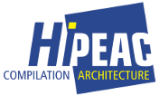
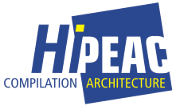
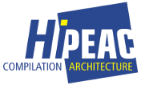
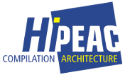

The focus of the RAPIDO workshop is on methods and tools for rapid simulation and performance evaluation in embedded and high performance system design. Considering continuous advances in chip design technology, it is expected that future-generation systems on chip will integrate numerous units on a single die, including multiple (heterogeneous) processor cores, multiple levels of (shared/private) caches or memories, and dedicated accelerators (in particular for AI), which will be glued together through a network on-chip (NoC). The design space is huge though and several design metrics should be considered as well for selecting the optimal system configuration. Despite several years of research, the early stage of design phase still requires to be supported by innovative design methodologies and tools for simulation, exploration and performance evaluation. RAPIDO seeks for original research papers that face this challenge for high performance embedded computing systems, in particular for system supporting Artificial Intelligence or using Articial Intelligence based techniques for desing space explorations and to satisfy design constraints (performance, power, security, etc).